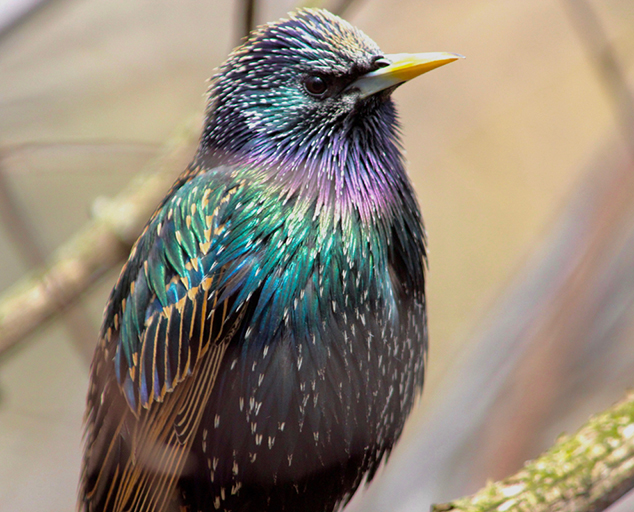
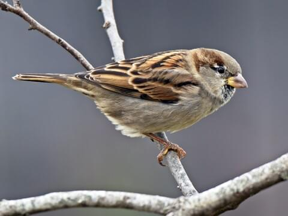
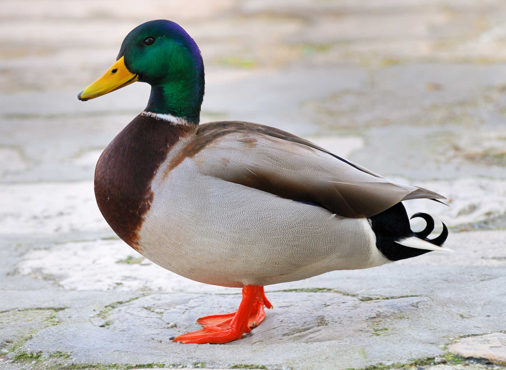

Why I Took This Internship
I originally wanted to be a veterinarian, so I’ve always felt strongly about animal care. As I pursued a degree in I.T., I looked for ways to combine my technical skills with causes I care about. This internship was the perfect opportunity to bridge both interests. I was able to help a wildlife rehab center while applying real-world tech solutions. I felt so happy to find a unique opportunity that bridged my passion and education.
Problem Statement
How can a local wildlife rehabilitation center demonstrate its readiness to operate and its importance to the region while continuing to provide consistent animal care?
The center had lost their wild bird handling license and could still apply through the standard reinstatement process, but that route would take too long. In the meantime, many injured, orphaned, or ill birds in the King county area would go without timely care. The core issue was a lack of structured data that could clearly demonstrate how frequently the public called in with bird-related emergencies and how essential the facility was to not only King county, but the surrounding counties and communities as well.
For this particular project, I needed to gather as much information about every group and process involved. This included the staff, regular mammal distress call volumes, daily activities like feeding and cleaning, the data being created and stored, on top of public caller behaviors and attitudes.
I focused on gathering and organizing that data—tracking the volume of distress calls, highlighting unmet needs, and documenting how many animals were left untreated. By presenting this information clearly, the goal was to demonstrate the facility’s value and accelerate the path toward license reinstatement.
Why This Project Mattered
Without a valid license, the center could not legally treat injured or orphaned birds. This left nearby cities like Kent, Auburn, and Federal Way without a trusted local option for wildlife emergencies. Many of the birds reported through distress calls were never seen by a specialist or were not rescued in time.
Birds the Center Could Accept Without a License

European Starling

Eurasian Collared Dove

House Sparrow
Birds Requiring a Wildlife Bird License

Mallard Duck

American Robin

Dark-eyed Junco

Steller's Jay
Why Distance Matters
The nearest wildlife rehab center that could treat birds was over 45 minutes away from our site.
Many callers couldn’t make the trip, resulting in fewer birds receiving care in time.
This map shows the distance from Federal Way to PAWS Wildlife Center in Lynnwood, WA.
A common misconception is that wildlife centers offer ambulance or pickup services, but in reality, most do not. I would have to refer the caller to other licensed locations and some callers immediately responded with something along the lines of "Forget it!" and end the call.
Different emotions of guilt, irritation, or anxiety could be felt over the phone when I told them we could not provide care at our facility.
Some of the harder calls to handle came from people who really wanted to help out but didn't have the time or resources to do so, like younger kids and teens or elderly couples. It wasn't a part of protocol, but I would spend some time to alleviate some of the guilt or stress of the situation by acknowleding their efforts and reminding them that we understand not everyone can make the drive to the other facilities.
Even though data can't carry the emotions and distress of the birds and the callers, each call felt like it should be represented to make a difference in the future.
By building a structured and easy-to-use call tracking system through Google Sheets, I helped the center document just how often these situations occurred. The plan is to use all the data to make the case that reinstating the license would not only restore treatment capabilities, but would also allow more birds to survive.
My Role
I improved the center’s call logging system by refining both written and digital methods for tracking bird distress calls. I updated the spreadsheet to include standardized fields and dropdowns and created a follow-up system for reconnecting with callers.
I also contributed to mammal care tracking and daily operations — cleaning enclosures, maintaining the space, and supporting volunteers. These experiences helped me see the connection between clean systems and better animal care.
Research & Discovery
I observed how staff handled distress calls and coordinated care. I found inconsistent terminology, missed follow-ups, and records that didn’t meet regulator expectations. By reviewing past reports, I learned what needed to change.
Facility Staff & Processes
- What level of detail has been captured in the past?
- What information is absolutely not necessary?
- How do we emphasize the impact of each call?
- What resource restrictions do we have? (time, money, staff attention, training, etc.)
- What is wrong with the current process for tracking bird distress calls?
Public Caller Behavior & Attitudes
- How do we guide the caller to give us the information we need?
- How can we quickly identify the situation and bird species that is being called in?
- How do we communicate with callers in distress so that they don't experience extreme emotions?
- What kind of information do callers forget to mention?
- How can we get them to agree to a follow up call?
I needed to make forms and data collection work for the staff taking the call while not overwhelming the distress caller with too many questions.
Each week introduced a new situation that I didn't consider either inside the facility or with caller trends during the summer months.
I also realized how important it was to introduce tools without disrupting daily routines. Designing for people, not just systems, became a key lesson.
Ideation & Execution
-
Separated bird and mammal call logs for clearer data organization
This made it easier to prioritize incoming calls and assign proper responses.
-
Built a Google Form to streamline bird call intake and standardize entries
Reduced intake confusion by giving volunteers a single, structured way to log calls.
-
Developed a follow-up tracker to monitor bird referrals and outcomes
Helped the team reconnect with callers and track where each bird ended up.
-
Created consistent templates for both written and digital entries
Ensured logs were clean and readable across different formats and staff roles.

Collected Bird Data

Written Data Example

Initial distress call form

Form for Follow up calls
Challenges
This was not a one-and-done project. I had to revise sheets frequently as I encountered new cases and unexpected issues. Every shift came with a new learning curve.
Facility Staff & Processes
- Inconsistent terminology between staff members
- Paper logs stored in scattered locations
- Low number of follow-up calls due to low staffing or busy days
- New tools introduced felt confusing so it was easier to use previous processes without data standardization
- Staff relied heavily on memory or verbal notes
Public Caller Behavior & Attitudes
- Callers would share information in different orders depending on stress levels
- Most callers could not properly identify the bird they found
- Some callers did not know how to attach a photo to an email via phone for bird identification
- Some callers would send emails to the wrong address
- Other smaller errors would accumulate to the point where the bird would pass or disappear before it could be taken anywhere
I also wasn’t trained in formal design research, so I relied on observation and trial-and-error. Being open to feedback and asking for support helped me grow.
Wrapping Up
Although I had to return to school before fully handing off the system, I was able to leave behind more structured tools and documentation that the center could use or build on. I recognize that in environments with limited capacity, sustaining new systems can be a challenge — and that’s something I would plan for differently in the future.
If given more time, I would have focused on training staff, gathering feedback on the system’s usability, and assigning a point person to maintain it. Still, this experience taught me the importance of designing with sustainability in mind, especially in nonprofit and fieldwork settings.
What I Learned
- Systems have to reflect how people actually use them.
- Asking better questions upfront improves design outcomes.
- Simple tools like Google Sheets can solve serious problems if structured well.
- Flexibility and clear communication build trust and progress.